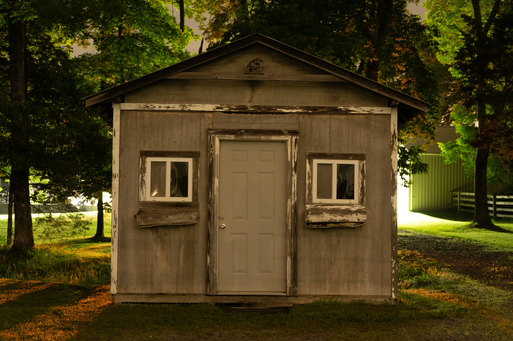
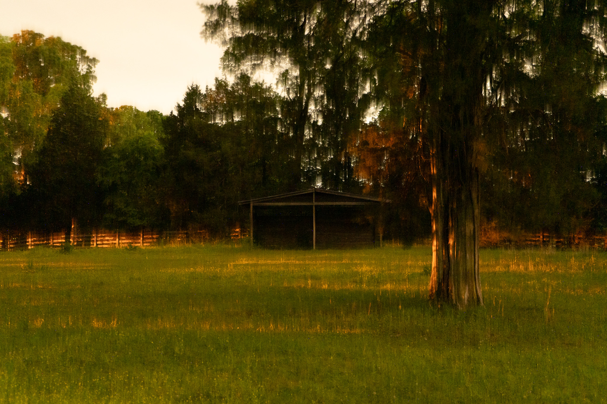
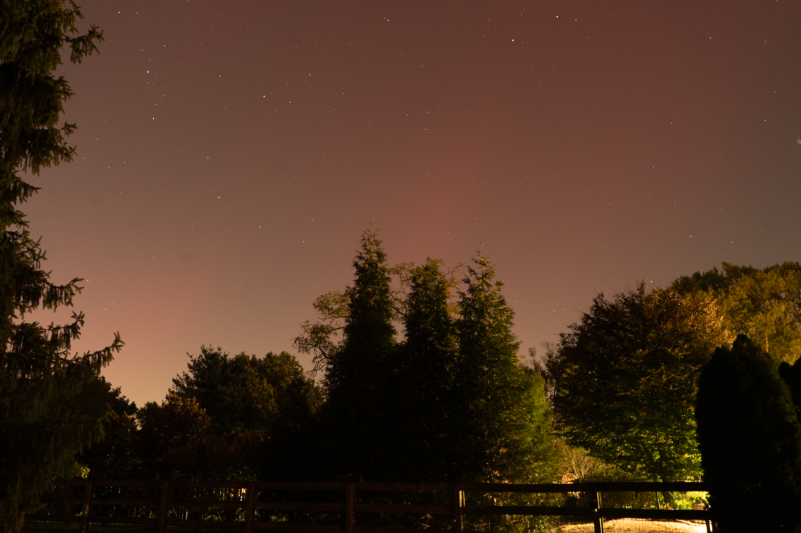
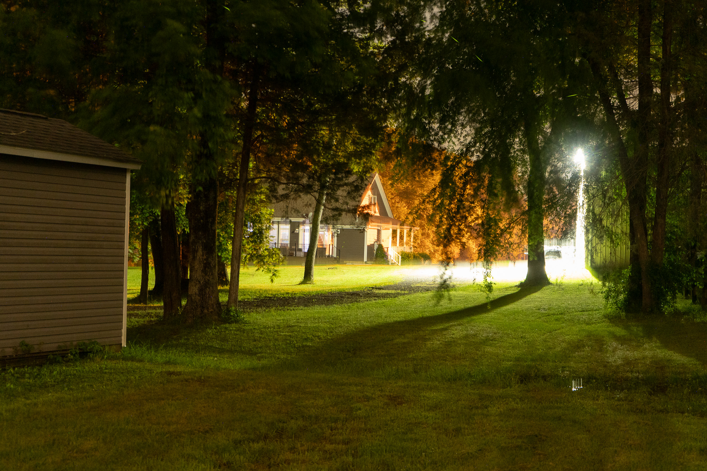
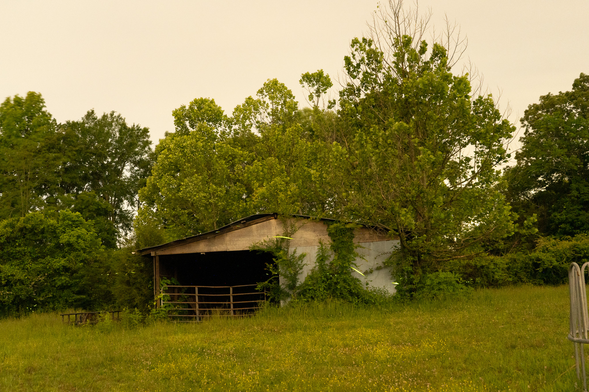
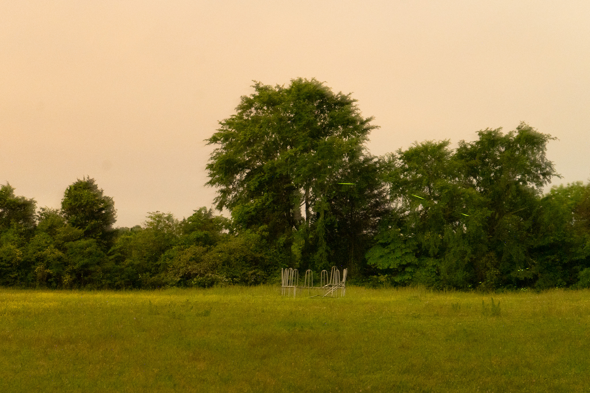

Photos taken between 11:00PM - 1:00AM. All of which are long exposures ranging from 15-30 seconds. These photos are mostly experiments from a project detailing light pollution in different areas of Tennessee, however, their peacefulness and uncanny feeling was much more appealing than originally thought. Streaks of light can be seen across some photos, usually these are fireflies, planes, or other moving lights.





